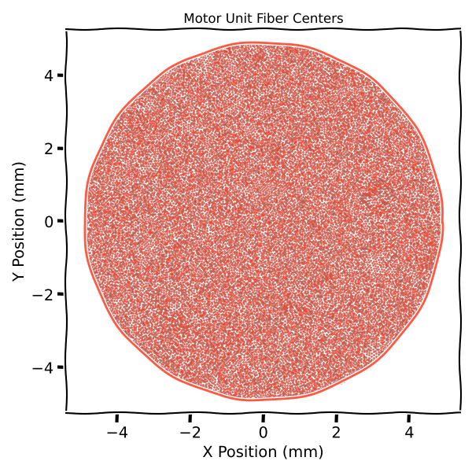
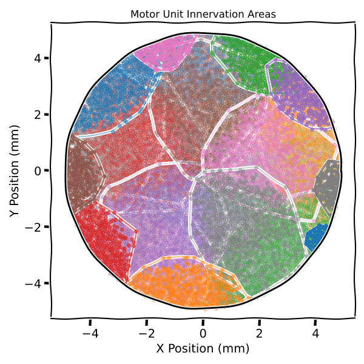

Note
Go to the end to download the full example code.
Muscle Model#
The spike trains alone are not enough to create EMG signals.
To create EMG signals, we need to create a muscle model that will distribute the motor units and fibers within the muscle volume.
Import Libraries#
from pathlib import Path
import numpy as np
import matplotlib.pyplot as plt
import joblib
from myogen import simulator
from myogen.utils.plotting.muscle import plot_mf_centers, plot_innervation_areas_2d
Define Parameters#
The muscle model is created using the Muscle object.
The Muscle object takes the following parameters:
recruitment_thresholds: Recruitment thresholds of the motor unitsradius: Radius of the muscle in mmfiber_density: Fiber density per mm²max_innervation_area_to_total_muscle_area__ratio: Maximum innervation area to total muscle area ratiogrid_resolution: Spatial resolution for muscle discretization
Since the recruitment thresholds are already generated, we can load them from the previous example using joblib.
# Load recruitment thresholds
save_path = Path("./results")
recruitment_thresholds = joblib.load(save_path / "thresholds.pkl")
# Define muscle parameters
muscle_radius = 4.9 # Muscle radius in mm
mean_fiber_length = 32 # Mean fiber length in mm
fiber_length_variation = 3 # Fiber length variation (±) in mm
fiber_density = 300 # Fiber density per mm²
# Define simulation parameters
max_innervation_ratio = 1 / 4 # Maximum motor unit territory size
grid_resolution = 256 # Spatial resolution for muscle discretization
Create Muscle Model#
Note
Depending on the parameters, the simulation can take a few minutes to run.
To avoid running the simulation every time, we can save the muscle model using joblib.
# Create muscle model
muscle = simulator.Muscle(
recruitment_thresholds=recruitment_thresholds[::4], # For faster simulation
radius__mm=muscle_radius,
fiber_density__fibers_per_mm2=fiber_density,
max_innervation_area_to_total_muscle_area__ratio=max_innervation_ratio,
grid_resolution=grid_resolution,
autorun=True,
)
# Save muscle model for future use
joblib.dump(muscle, save_path / "muscle_model.pkl")
# Display muscle statistics
total_fibers = sum(muscle.resulting_number_of_innervated_fibers)
print(f"\nMuscle model statistics:")
print(f" - Total muscle fibers: {total_fibers}")
print(f" - Mean fibers per MU: {total_fibers / len(recruitment_thresholds):.1f}")
print(f" - Muscle cross-sectional area: {np.pi * muscle_radius**2:.1f} mm²")
Calculating out-of-circle coefficients: 0%| | 0/25 [00:00<?, ?MU/s]
Calculating out-of-circle coefficients: 4%|▍ | 1/25 [00:03<01:29, 3.72s/MU]
Calculating out-of-circle coefficients: 8%|▊ | 2/25 [00:07<01:24, 3.66s/MU]
Calculating out-of-circle coefficients: 12%|█▏ | 3/25 [00:09<01:02, 2.84s/MU]
Calculating out-of-circle coefficients: 16%|█▌ | 4/25 [00:12<01:03, 3.00s/MU]
Calculating out-of-circle coefficients: 20%|██ | 5/25 [00:14<00:50, 2.50s/MU]
Calculating out-of-circle coefficients: 24%|██▍ | 6/25 [00:15<00:41, 2.18s/MU]
Calculating out-of-circle coefficients: 28%|██▊ | 7/25 [00:17<00:36, 2.03s/MU]
Calculating out-of-circle coefficients: 32%|███▏ | 8/25 [00:19<00:32, 1.94s/MU]
Calculating out-of-circle coefficients: 36%|███▌ | 9/25 [00:20<00:26, 1.68s/MU]
Calculating out-of-circle coefficients: 40%|████ | 10/25 [00:22<00:26, 1.80s/MU]
Calculating out-of-circle coefficients: 44%|████▍ | 11/25 [00:24<00:26, 1.87s/MU]
Calculating out-of-circle coefficients: 48%|████▊ | 12/25 [00:25<00:21, 1.65s/MU]
Calculating out-of-circle coefficients: 52%|█████▏ | 13/25 [00:27<00:20, 1.71s/MU]
Calculating out-of-circle coefficients: 56%|█████▌ | 14/25 [00:28<00:17, 1.57s/MU]
Calculating out-of-circle coefficients: 60%|██████ | 15/25 [00:29<00:13, 1.33s/MU]
Calculating out-of-circle coefficients: 64%|██████▍ | 16/25 [00:31<00:13, 1.52s/MU]
Calculating out-of-circle coefficients: 68%|██████▊ | 17/25 [00:32<00:10, 1.35s/MU]
Calculating out-of-circle coefficients: 72%|███████▏ | 18/25 [00:33<00:10, 1.45s/MU]
Calculating out-of-circle coefficients: 76%|███████▌ | 19/25 [00:34<00:07, 1.30s/MU]
Calculating out-of-circle coefficients: 80%|████████ | 20/25 [00:36<00:06, 1.39s/MU]
Calculating out-of-circle coefficients: 84%|████████▍ | 21/25 [00:37<00:05, 1.27s/MU]
Calculating out-of-circle coefficients: 88%|████████▊ | 22/25 [00:38<00:03, 1.11s/MU]
Calculating out-of-circle coefficients: 92%|█████████▏| 23/25 [00:39<00:02, 1.20s/MU]
Calculating out-of-circle coefficients: 96%|█████████▌| 24/25 [00:40<00:01, 1.07s/MU]
Calculating out-of-circle coefficients: 100%|██████████| 25/25 [00:41<00:00, 1.10s/MU]
Calculating out-of-circle coefficients: 100%|██████████| 25/25 [00:41<00:00, 1.66s/MU]
Assigning muscle fibers to motor neurons: 0%| | 0/22629 [00:00<?, ?MF/s]
Assigning muscle fibers to motor neurons: 0%| | 32/22629 [00:00<01:11, 317.39MF/s]
Assigning muscle fibers to motor neurons: 0%| | 65/22629 [00:00<01:10, 320.12MF/s]
Assigning muscle fibers to motor neurons: 0%| | 98/22629 [00:00<01:10, 321.46MF/s]
Assigning muscle fibers to motor neurons: 1%| | 131/22629 [00:00<01:10, 320.08MF/s]
Assigning muscle fibers to motor neurons: 1%| | 164/22629 [00:00<01:10, 319.30MF/s]
Assigning muscle fibers to motor neurons: 1%| | 196/22629 [00:00<01:10, 316.94MF/s]
Assigning muscle fibers to motor neurons: 1%| | 228/22629 [00:00<01:10, 317.10MF/s]
Assigning muscle fibers to motor neurons: 1%| | 260/22629 [00:00<01:10, 317.11MF/s]
Assigning muscle fibers to motor neurons: 1%|▏ | 292/22629 [00:00<01:10, 317.65MF/s]
Assigning muscle fibers to motor neurons: 1%|▏ | 325/22629 [00:01<01:09, 318.84MF/s]
Assigning muscle fibers to motor neurons: 2%|▏ | 358/22629 [00:01<01:09, 319.53MF/s]
Assigning muscle fibers to motor neurons: 2%|▏ | 391/22629 [00:01<01:09, 319.78MF/s]
Assigning muscle fibers to motor neurons: 2%|▏ | 424/22629 [00:01<01:09, 320.45MF/s]
Assigning muscle fibers to motor neurons: 2%|▏ | 457/22629 [00:01<01:09, 320.97MF/s]
Assigning muscle fibers to motor neurons: 2%|▏ | 490/22629 [00:01<01:08, 321.49MF/s]
Assigning muscle fibers to motor neurons: 2%|▏ | 523/22629 [00:01<01:08, 321.76MF/s]
Assigning muscle fibers to motor neurons: 2%|▏ | 556/22629 [00:01<01:08, 321.93MF/s]
Assigning muscle fibers to motor neurons: 3%|▎ | 589/22629 [00:01<01:08, 321.91MF/s]
Assigning muscle fibers to motor neurons: 3%|▎ | 622/22629 [00:01<01:08, 321.58MF/s]
Assigning muscle fibers to motor neurons: 3%|▎ | 655/22629 [00:02<01:08, 321.48MF/s]
Assigning muscle fibers to motor neurons: 3%|▎ | 688/22629 [00:02<01:08, 321.65MF/s]
Assigning muscle fibers to motor neurons: 3%|▎ | 721/22629 [00:02<01:08, 320.77MF/s]
Assigning muscle fibers to motor neurons: 3%|▎ | 754/22629 [00:02<01:08, 320.77MF/s]
Assigning muscle fibers to motor neurons: 3%|▎ | 787/22629 [00:02<01:08, 321.12MF/s]
Assigning muscle fibers to motor neurons: 4%|▎ | 820/22629 [00:02<01:07, 321.19MF/s]
Assigning muscle fibers to motor neurons: 4%|▍ | 853/22629 [00:02<01:07, 321.24MF/s]
Assigning muscle fibers to motor neurons: 4%|▍ | 886/22629 [00:02<01:07, 321.44MF/s]
Assigning muscle fibers to motor neurons: 4%|▍ | 919/22629 [00:02<01:07, 321.18MF/s]
Assigning muscle fibers to motor neurons: 4%|▍ | 952/22629 [00:02<01:07, 321.13MF/s]
Assigning muscle fibers to motor neurons: 4%|▍ | 985/22629 [00:03<01:07, 321.42MF/s]
Assigning muscle fibers to motor neurons: 4%|▍ | 1018/22629 [00:03<01:07, 321.42MF/s]
Assigning muscle fibers to motor neurons: 5%|▍ | 1051/22629 [00:03<01:07, 321.36MF/s]
Assigning muscle fibers to motor neurons: 5%|▍ | 1084/22629 [00:03<01:06, 321.70MF/s]
Assigning muscle fibers to motor neurons: 5%|▍ | 1117/22629 [00:03<01:06, 321.96MF/s]
Assigning muscle fibers to motor neurons: 5%|▌ | 1150/22629 [00:03<01:07, 320.20MF/s]
Assigning muscle fibers to motor neurons: 5%|▌ | 1183/22629 [00:03<01:06, 320.82MF/s]
Assigning muscle fibers to motor neurons: 5%|▌ | 1216/22629 [00:03<01:06, 322.29MF/s]
Assigning muscle fibers to motor neurons: 6%|▌ | 1249/22629 [00:03<01:06, 322.93MF/s]
Assigning muscle fibers to motor neurons: 6%|▌ | 1282/22629 [00:03<01:06, 322.87MF/s]
Assigning muscle fibers to motor neurons: 6%|▌ | 1315/22629 [00:04<01:05, 323.32MF/s]
Assigning muscle fibers to motor neurons: 6%|▌ | 1348/22629 [00:04<01:05, 323.06MF/s]
Assigning muscle fibers to motor neurons: 6%|▌ | 1381/22629 [00:04<01:05, 322.96MF/s]
Assigning muscle fibers to motor neurons: 6%|▌ | 1414/22629 [00:04<01:09, 307.01MF/s]
Assigning muscle fibers to motor neurons: 6%|▋ | 1447/22629 [00:04<01:08, 310.91MF/s]
Assigning muscle fibers to motor neurons: 7%|▋ | 1480/22629 [00:04<01:07, 314.00MF/s]
Assigning muscle fibers to motor neurons: 7%|▋ | 1513/22629 [00:04<01:06, 316.32MF/s]
Assigning muscle fibers to motor neurons: 7%|▋ | 1546/22629 [00:04<01:06, 317.74MF/s]
Assigning muscle fibers to motor neurons: 7%|▋ | 1579/22629 [00:04<01:05, 319.81MF/s]
Assigning muscle fibers to motor neurons: 7%|▋ | 1612/22629 [00:05<01:05, 321.37MF/s]
Assigning muscle fibers to motor neurons: 7%|▋ | 1645/22629 [00:05<01:05, 321.99MF/s]
Assigning muscle fibers to motor neurons: 7%|▋ | 1678/22629 [00:05<01:04, 322.52MF/s]
Assigning muscle fibers to motor neurons: 8%|▊ | 1711/22629 [00:05<01:04, 322.40MF/s]
Assigning muscle fibers to motor neurons: 8%|▊ | 1744/22629 [00:05<01:04, 321.96MF/s]
Assigning muscle fibers to motor neurons: 8%|▊ | 1777/22629 [00:05<01:04, 322.39MF/s]
Assigning muscle fibers to motor neurons: 8%|▊ | 1810/22629 [00:05<01:04, 322.60MF/s]
Assigning muscle fibers to motor neurons: 8%|▊ | 1843/22629 [00:05<01:04, 322.45MF/s]
Assigning muscle fibers to motor neurons: 8%|▊ | 1876/22629 [00:05<01:04, 323.06MF/s]
Assigning muscle fibers to motor neurons: 8%|▊ | 1909/22629 [00:05<01:04, 322.79MF/s]
Assigning muscle fibers to motor neurons: 9%|▊ | 1942/22629 [00:06<01:04, 322.70MF/s]
Assigning muscle fibers to motor neurons: 9%|▊ | 1975/22629 [00:06<01:03, 323.16MF/s]
Assigning muscle fibers to motor neurons: 9%|▉ | 2008/22629 [00:06<01:03, 322.82MF/s]
Assigning muscle fibers to motor neurons: 9%|▉ | 2041/22629 [00:06<01:03, 322.92MF/s]
Assigning muscle fibers to motor neurons: 9%|▉ | 2074/22629 [00:06<01:03, 323.47MF/s]
Assigning muscle fibers to motor neurons: 9%|▉ | 2107/22629 [00:06<01:03, 323.38MF/s]
Assigning muscle fibers to motor neurons: 9%|▉ | 2140/22629 [00:06<01:03, 324.11MF/s]
Assigning muscle fibers to motor neurons: 10%|▉ | 2173/22629 [00:06<01:03, 323.65MF/s]
Assigning muscle fibers to motor neurons: 10%|▉ | 2206/22629 [00:06<01:03, 323.18MF/s]
Assigning muscle fibers to motor neurons: 10%|▉ | 2239/22629 [00:06<01:02, 324.02MF/s]
Assigning muscle fibers to motor neurons: 10%|█ | 2272/22629 [00:07<01:02, 323.77MF/s]
Assigning muscle fibers to motor neurons: 10%|█ | 2305/22629 [00:07<01:02, 323.52MF/s]
Assigning muscle fibers to motor neurons: 10%|█ | 2338/22629 [00:07<01:02, 323.88MF/s]
Assigning muscle fibers to motor neurons: 10%|█ | 2371/22629 [00:07<01:02, 323.66MF/s]
Assigning muscle fibers to motor neurons: 11%|█ | 2404/22629 [00:07<01:02, 323.88MF/s]
Assigning muscle fibers to motor neurons: 11%|█ | 2437/22629 [00:07<01:02, 323.95MF/s]
Assigning muscle fibers to motor neurons: 11%|█ | 2470/22629 [00:07<01:02, 324.33MF/s]
Assigning muscle fibers to motor neurons: 11%|█ | 2503/22629 [00:07<01:02, 324.43MF/s]
Assigning muscle fibers to motor neurons: 11%|█ | 2536/22629 [00:07<01:01, 324.65MF/s]
Assigning muscle fibers to motor neurons: 11%|█▏ | 2569/22629 [00:07<01:01, 324.94MF/s]
Assigning muscle fibers to motor neurons: 11%|█▏ | 2602/22629 [00:08<01:01, 324.62MF/s]
Assigning muscle fibers to motor neurons: 12%|█▏ | 2635/22629 [00:08<01:01, 324.46MF/s]
Assigning muscle fibers to motor neurons: 12%|█▏ | 2668/22629 [00:08<01:01, 324.91MF/s]
Assigning muscle fibers to motor neurons: 12%|█▏ | 2701/22629 [00:08<01:01, 325.06MF/s]
Assigning muscle fibers to motor neurons: 12%|█▏ | 2734/22629 [00:08<01:01, 324.49MF/s]
Assigning muscle fibers to motor neurons: 12%|█▏ | 2767/22629 [00:08<01:01, 323.00MF/s]
Assigning muscle fibers to motor neurons: 12%|█▏ | 2800/22629 [00:08<01:01, 322.64MF/s]
Assigning muscle fibers to motor neurons: 13%|█▎ | 2833/22629 [00:08<01:01, 323.38MF/s]
Assigning muscle fibers to motor neurons: 13%|█▎ | 2866/22629 [00:08<01:01, 323.40MF/s]
Assigning muscle fibers to motor neurons: 13%|█▎ | 2899/22629 [00:09<01:01, 323.20MF/s]
Assigning muscle fibers to motor neurons: 13%|█▎ | 2932/22629 [00:09<01:00, 323.04MF/s]
Assigning muscle fibers to motor neurons: 13%|█▎ | 2965/22629 [00:09<01:00, 323.70MF/s]
Assigning muscle fibers to motor neurons: 13%|█▎ | 2998/22629 [00:09<01:00, 323.93MF/s]
Assigning muscle fibers to motor neurons: 13%|█▎ | 3031/22629 [00:09<01:00, 323.61MF/s]
Assigning muscle fibers to motor neurons: 14%|█▎ | 3064/22629 [00:09<01:00, 323.79MF/s]
Assigning muscle fibers to motor neurons: 14%|█▎ | 3097/22629 [00:09<01:00, 323.48MF/s]
Assigning muscle fibers to motor neurons: 14%|█▍ | 3130/22629 [00:09<01:00, 323.20MF/s]
Assigning muscle fibers to motor neurons: 14%|█▍ | 3163/22629 [00:09<01:00, 322.94MF/s]
Assigning muscle fibers to motor neurons: 14%|█▍ | 3196/22629 [00:09<01:00, 323.35MF/s]
Assigning muscle fibers to motor neurons: 14%|█▍ | 3229/22629 [00:10<01:00, 322.80MF/s]
Assigning muscle fibers to motor neurons: 14%|█▍ | 3262/22629 [00:10<00:59, 322.97MF/s]
Assigning muscle fibers to motor neurons: 15%|█▍ | 3295/22629 [00:10<00:59, 322.97MF/s]
Assigning muscle fibers to motor neurons: 15%|█▍ | 3328/22629 [00:10<00:59, 322.86MF/s]
Assigning muscle fibers to motor neurons: 15%|█▍ | 3361/22629 [00:10<00:59, 323.41MF/s]
Assigning muscle fibers to motor neurons: 15%|█▍ | 3394/22629 [00:10<00:59, 323.63MF/s]
Assigning muscle fibers to motor neurons: 15%|█▌ | 3427/22629 [00:10<00:59, 322.27MF/s]
Assigning muscle fibers to motor neurons: 15%|█▌ | 3460/22629 [00:10<00:59, 322.26MF/s]
Assigning muscle fibers to motor neurons: 15%|█▌ | 3493/22629 [00:10<00:59, 322.22MF/s]
Assigning muscle fibers to motor neurons: 16%|█▌ | 3526/22629 [00:10<00:59, 322.18MF/s]
Assigning muscle fibers to motor neurons: 16%|█▌ | 3559/22629 [00:11<00:59, 322.41MF/s]
Assigning muscle fibers to motor neurons: 16%|█▌ | 3592/22629 [00:11<00:58, 323.45MF/s]
Assigning muscle fibers to motor neurons: 16%|█▌ | 3625/22629 [00:11<00:58, 323.28MF/s]
Assigning muscle fibers to motor neurons: 16%|█▌ | 3658/22629 [00:11<00:58, 323.22MF/s]
Assigning muscle fibers to motor neurons: 16%|█▋ | 3691/22629 [00:11<00:58, 323.82MF/s]
Assigning muscle fibers to motor neurons: 16%|█▋ | 3724/22629 [00:11<00:58, 323.96MF/s]
Assigning muscle fibers to motor neurons: 17%|█▋ | 3757/22629 [00:11<00:58, 324.21MF/s]
Assigning muscle fibers to motor neurons: 17%|█▋ | 3790/22629 [00:11<00:58, 323.54MF/s]
Assigning muscle fibers to motor neurons: 17%|█▋ | 3823/22629 [00:11<00:58, 324.13MF/s]
Assigning muscle fibers to motor neurons: 17%|█▋ | 3856/22629 [00:11<00:57, 324.08MF/s]
Assigning muscle fibers to motor neurons: 17%|█▋ | 3889/22629 [00:12<00:57, 323.68MF/s]
Assigning muscle fibers to motor neurons: 17%|█▋ | 3922/22629 [00:12<00:57, 324.03MF/s]
Assigning muscle fibers to motor neurons: 17%|█▋ | 3955/22629 [00:12<00:57, 324.59MF/s]
Assigning muscle fibers to motor neurons: 18%|█▊ | 3988/22629 [00:12<00:57, 325.17MF/s]
Assigning muscle fibers to motor neurons: 18%|█▊ | 4021/22629 [00:12<00:57, 325.75MF/s]
Assigning muscle fibers to motor neurons: 18%|█▊ | 4054/22629 [00:12<00:57, 325.76MF/s]
Assigning muscle fibers to motor neurons: 18%|█▊ | 4087/22629 [00:12<00:57, 324.42MF/s]
Assigning muscle fibers to motor neurons: 18%|█▊ | 4120/22629 [00:12<00:57, 322.99MF/s]
Assigning muscle fibers to motor neurons: 18%|█▊ | 4153/22629 [00:12<00:57, 322.75MF/s]
Assigning muscle fibers to motor neurons: 18%|█▊ | 4186/22629 [00:12<00:57, 323.19MF/s]
Assigning muscle fibers to motor neurons: 19%|█▊ | 4219/22629 [00:13<00:56, 322.99MF/s]
Assigning muscle fibers to motor neurons: 19%|█▉ | 4252/22629 [00:13<00:56, 323.34MF/s]
Assigning muscle fibers to motor neurons: 19%|█▉ | 4285/22629 [00:13<00:56, 324.14MF/s]
Assigning muscle fibers to motor neurons: 19%|█▉ | 4318/22629 [00:13<00:56, 323.81MF/s]
Assigning muscle fibers to motor neurons: 19%|█▉ | 4351/22629 [00:13<00:56, 324.87MF/s]
Assigning muscle fibers to motor neurons: 19%|█▉ | 4384/22629 [00:13<00:56, 325.30MF/s]
Assigning muscle fibers to motor neurons: 20%|█▉ | 4417/22629 [00:13<00:55, 325.48MF/s]
Assigning muscle fibers to motor neurons: 20%|█▉ | 4450/22629 [00:13<00:55, 324.75MF/s]
Assigning muscle fibers to motor neurons: 20%|█▉ | 4483/22629 [00:13<00:55, 324.72MF/s]
Assigning muscle fibers to motor neurons: 20%|█▉ | 4516/22629 [00:14<00:55, 325.99MF/s]
Assigning muscle fibers to motor neurons: 20%|██ | 4549/22629 [00:14<00:55, 326.37MF/s]
Assigning muscle fibers to motor neurons: 20%|██ | 4582/22629 [00:14<00:55, 324.81MF/s]
Assigning muscle fibers to motor neurons: 20%|██ | 4615/22629 [00:14<00:55, 325.88MF/s]
Assigning muscle fibers to motor neurons: 21%|██ | 4648/22629 [00:14<00:55, 326.82MF/s]
Assigning muscle fibers to motor neurons: 21%|██ | 4681/22629 [00:14<00:54, 327.03MF/s]
Assigning muscle fibers to motor neurons: 21%|██ | 4714/22629 [00:14<00:54, 327.17MF/s]
Assigning muscle fibers to motor neurons: 21%|██ | 4747/22629 [00:14<00:54, 327.12MF/s]
Assigning muscle fibers to motor neurons: 21%|██ | 4780/22629 [00:14<00:54, 327.32MF/s]
Assigning muscle fibers to motor neurons: 21%|██▏ | 4813/22629 [00:14<00:54, 327.90MF/s]
Assigning muscle fibers to motor neurons: 21%|██▏ | 4846/22629 [00:15<00:54, 327.80MF/s]
Assigning muscle fibers to motor neurons: 22%|██▏ | 4879/22629 [00:15<00:54, 326.74MF/s]
Assigning muscle fibers to motor neurons: 22%|██▏ | 4912/22629 [00:15<00:54, 326.70MF/s]
Assigning muscle fibers to motor neurons: 22%|██▏ | 4945/22629 [00:15<00:54, 327.12MF/s]
Assigning muscle fibers to motor neurons: 22%|██▏ | 4978/22629 [00:15<00:54, 326.40MF/s]
Assigning muscle fibers to motor neurons: 22%|██▏ | 5011/22629 [00:15<00:53, 326.51MF/s]
Assigning muscle fibers to motor neurons: 22%|██▏ | 5044/22629 [00:15<00:53, 326.78MF/s]
Assigning muscle fibers to motor neurons: 22%|██▏ | 5077/22629 [00:15<00:53, 327.17MF/s]
Assigning muscle fibers to motor neurons: 23%|██▎ | 5110/22629 [00:15<00:53, 327.97MF/s]
Assigning muscle fibers to motor neurons: 23%|██▎ | 5143/22629 [00:15<00:53, 328.16MF/s]
Assigning muscle fibers to motor neurons: 23%|██▎ | 5176/22629 [00:16<00:53, 328.32MF/s]
Assigning muscle fibers to motor neurons: 23%|██▎ | 5209/22629 [00:16<00:53, 328.22MF/s]
Assigning muscle fibers to motor neurons: 23%|██▎ | 5242/22629 [00:16<00:53, 328.03MF/s]
Assigning muscle fibers to motor neurons: 23%|██▎ | 5275/22629 [00:16<00:52, 327.95MF/s]
Assigning muscle fibers to motor neurons: 23%|██▎ | 5308/22629 [00:16<00:52, 328.28MF/s]
Assigning muscle fibers to motor neurons: 24%|██▎ | 5341/22629 [00:16<00:52, 328.01MF/s]
Assigning muscle fibers to motor neurons: 24%|██▎ | 5374/22629 [00:16<00:52, 327.90MF/s]
Assigning muscle fibers to motor neurons: 24%|██▍ | 5408/22629 [00:16<00:52, 328.79MF/s]
Assigning muscle fibers to motor neurons: 24%|██▍ | 5441/22629 [00:16<00:52, 327.71MF/s]
Assigning muscle fibers to motor neurons: 24%|██▍ | 5474/22629 [00:16<00:52, 327.72MF/s]
Assigning muscle fibers to motor neurons: 24%|██▍ | 5507/22629 [00:17<00:52, 327.73MF/s]
Assigning muscle fibers to motor neurons: 24%|██▍ | 5540/22629 [00:17<00:52, 327.80MF/s]
Assigning muscle fibers to motor neurons: 25%|██▍ | 5573/22629 [00:17<00:52, 327.81MF/s]
Assigning muscle fibers to motor neurons: 25%|██▍ | 5606/22629 [00:17<00:51, 327.81MF/s]
Assigning muscle fibers to motor neurons: 25%|██▍ | 5639/22629 [00:17<00:51, 328.06MF/s]
Assigning muscle fibers to motor neurons: 25%|██▌ | 5672/22629 [00:17<00:51, 327.06MF/s]
Assigning muscle fibers to motor neurons: 25%|██▌ | 5705/22629 [00:17<00:51, 327.03MF/s]
Assigning muscle fibers to motor neurons: 25%|██▌ | 5738/22629 [00:17<00:51, 326.89MF/s]
Assigning muscle fibers to motor neurons: 26%|██▌ | 5771/22629 [00:17<00:51, 326.60MF/s]
Assigning muscle fibers to motor neurons: 26%|██▌ | 5804/22629 [00:17<00:51, 326.49MF/s]
Assigning muscle fibers to motor neurons: 26%|██▌ | 5837/22629 [00:18<00:51, 327.05MF/s]
Assigning muscle fibers to motor neurons: 26%|██▌ | 5870/22629 [00:18<00:51, 326.92MF/s]
Assigning muscle fibers to motor neurons: 26%|██▌ | 5903/22629 [00:18<00:51, 326.29MF/s]
Assigning muscle fibers to motor neurons: 26%|██▌ | 5936/22629 [00:18<00:51, 325.66MF/s]
Assigning muscle fibers to motor neurons: 26%|██▋ | 5969/22629 [00:18<00:51, 326.51MF/s]
Assigning muscle fibers to motor neurons: 27%|██▋ | 6002/22629 [00:18<00:50, 327.04MF/s]
Assigning muscle fibers to motor neurons: 27%|██▋ | 6035/22629 [00:18<00:50, 327.06MF/s]
Assigning muscle fibers to motor neurons: 27%|██▋ | 6068/22629 [00:18<00:50, 327.02MF/s]
Assigning muscle fibers to motor neurons: 27%|██▋ | 6101/22629 [00:18<00:50, 327.10MF/s]
Assigning muscle fibers to motor neurons: 27%|██▋ | 6134/22629 [00:18<00:50, 327.51MF/s]
Assigning muscle fibers to motor neurons: 27%|██▋ | 6167/22629 [00:19<00:50, 327.26MF/s]
Assigning muscle fibers to motor neurons: 27%|██▋ | 6200/22629 [00:19<00:50, 327.65MF/s]
Assigning muscle fibers to motor neurons: 28%|██▊ | 6233/22629 [00:19<00:49, 328.02MF/s]
Assigning muscle fibers to motor neurons: 28%|██▊ | 6266/22629 [00:19<00:50, 326.57MF/s]
Assigning muscle fibers to motor neurons: 28%|██▊ | 6299/22629 [00:19<00:50, 324.59MF/s]
Assigning muscle fibers to motor neurons: 28%|██▊ | 6332/22629 [00:19<00:50, 325.09MF/s]
Assigning muscle fibers to motor neurons: 28%|██▊ | 6365/22629 [00:19<00:50, 325.12MF/s]
Assigning muscle fibers to motor neurons: 28%|██▊ | 6398/22629 [00:19<00:49, 325.34MF/s]
Assigning muscle fibers to motor neurons: 28%|██▊ | 6431/22629 [00:19<00:49, 325.56MF/s]
Assigning muscle fibers to motor neurons: 29%|██▊ | 6465/22629 [00:19<00:49, 327.24MF/s]
Assigning muscle fibers to motor neurons: 29%|██▊ | 6498/22629 [00:20<00:49, 326.79MF/s]
Assigning muscle fibers to motor neurons: 29%|██▉ | 6532/22629 [00:20<00:49, 327.87MF/s]
Assigning muscle fibers to motor neurons: 29%|██▉ | 6565/22629 [00:20<00:49, 327.27MF/s]
Assigning muscle fibers to motor neurons: 29%|██▉ | 6598/22629 [00:20<00:48, 327.40MF/s]
Assigning muscle fibers to motor neurons: 29%|██▉ | 6631/22629 [00:20<00:48, 326.53MF/s]
Assigning muscle fibers to motor neurons: 29%|██▉ | 6664/22629 [00:20<00:48, 326.39MF/s]
Assigning muscle fibers to motor neurons: 30%|██▉ | 6697/22629 [00:20<00:48, 326.65MF/s]
Assigning muscle fibers to motor neurons: 30%|██▉ | 6730/22629 [00:20<00:48, 326.95MF/s]
Assigning muscle fibers to motor neurons: 30%|██▉ | 6763/22629 [00:20<00:48, 327.19MF/s]
Assigning muscle fibers to motor neurons: 30%|███ | 6796/22629 [00:20<00:48, 324.84MF/s]
Assigning muscle fibers to motor neurons: 30%|███ | 6829/22629 [00:21<00:48, 324.52MF/s]
Assigning muscle fibers to motor neurons: 30%|███ | 6862/22629 [00:21<00:48, 325.75MF/s]
Assigning muscle fibers to motor neurons: 30%|███ | 6896/22629 [00:21<00:48, 327.52MF/s]
Assigning muscle fibers to motor neurons: 31%|███ | 6929/22629 [00:21<00:47, 327.68MF/s]
Assigning muscle fibers to motor neurons: 31%|███ | 6962/22629 [00:21<00:47, 328.16MF/s]
Assigning muscle fibers to motor neurons: 31%|███ | 6995/22629 [00:21<00:47, 328.19MF/s]
Assigning muscle fibers to motor neurons: 31%|███ | 7028/22629 [00:21<00:47, 328.33MF/s]
Assigning muscle fibers to motor neurons: 31%|███ | 7061/22629 [00:21<00:47, 328.60MF/s]
Assigning muscle fibers to motor neurons: 31%|███▏ | 7094/22629 [00:21<00:47, 328.93MF/s]
Assigning muscle fibers to motor neurons: 31%|███▏ | 7127/22629 [00:21<00:47, 328.58MF/s]
Assigning muscle fibers to motor neurons: 32%|███▏ | 7160/22629 [00:22<00:47, 328.79MF/s]
Assigning muscle fibers to motor neurons: 32%|███▏ | 7193/22629 [00:22<00:47, 328.12MF/s]
Assigning muscle fibers to motor neurons: 32%|███▏ | 7226/22629 [00:22<00:46, 328.13MF/s]
Assigning muscle fibers to motor neurons: 32%|███▏ | 7259/22629 [00:22<00:46, 327.75MF/s]
Assigning muscle fibers to motor neurons: 32%|███▏ | 7292/22629 [00:22<00:46, 328.10MF/s]
Assigning muscle fibers to motor neurons: 32%|███▏ | 7326/22629 [00:22<00:46, 329.08MF/s]
Assigning muscle fibers to motor neurons: 33%|███▎ | 7360/22629 [00:22<00:46, 329.61MF/s]
Assigning muscle fibers to motor neurons: 33%|███▎ | 7394/22629 [00:22<00:46, 330.61MF/s]
Assigning muscle fibers to motor neurons: 33%|███▎ | 7428/22629 [00:22<00:46, 330.12MF/s]
Assigning muscle fibers to motor neurons: 33%|███▎ | 7462/22629 [00:23<00:45, 329.98MF/s]
Assigning muscle fibers to motor neurons: 33%|███▎ | 7496/22629 [00:23<00:45, 330.32MF/s]
Assigning muscle fibers to motor neurons: 33%|███▎ | 7530/22629 [00:23<00:45, 329.90MF/s]
Assigning muscle fibers to motor neurons: 33%|███▎ | 7563/22629 [00:23<00:45, 329.90MF/s]
Assigning muscle fibers to motor neurons: 34%|███▎ | 7597/22629 [00:23<00:45, 330.15MF/s]
Assigning muscle fibers to motor neurons: 34%|███▎ | 7631/22629 [00:23<00:45, 329.74MF/s]
Assigning muscle fibers to motor neurons: 34%|███▍ | 7664/22629 [00:23<00:46, 318.58MF/s]
Assigning muscle fibers to motor neurons: 34%|███▍ | 7698/22629 [00:23<00:46, 323.53MF/s]
Assigning muscle fibers to motor neurons: 34%|███▍ | 7732/22629 [00:23<00:45, 326.29MF/s]
Assigning muscle fibers to motor neurons: 34%|███▍ | 7766/22629 [00:23<00:45, 327.88MF/s]
Assigning muscle fibers to motor neurons: 34%|███▍ | 7800/22629 [00:24<00:45, 329.17MF/s]
Assigning muscle fibers to motor neurons: 35%|███▍ | 7834/22629 [00:24<00:44, 329.87MF/s]
Assigning muscle fibers to motor neurons: 35%|███▍ | 7868/22629 [00:24<00:44, 330.48MF/s]
Assigning muscle fibers to motor neurons: 35%|███▍ | 7902/22629 [00:24<00:44, 330.81MF/s]
Assigning muscle fibers to motor neurons: 35%|███▌ | 7936/22629 [00:24<00:44, 330.28MF/s]
Assigning muscle fibers to motor neurons: 35%|███▌ | 7970/22629 [00:24<00:44, 329.41MF/s]
Assigning muscle fibers to motor neurons: 35%|███▌ | 8003/22629 [00:24<00:44, 328.91MF/s]
Assigning muscle fibers to motor neurons: 36%|███▌ | 8036/22629 [00:24<00:44, 328.99MF/s]
Assigning muscle fibers to motor neurons: 36%|███▌ | 8069/22629 [00:24<00:44, 327.92MF/s]
Assigning muscle fibers to motor neurons: 36%|███▌ | 8103/22629 [00:24<00:44, 329.02MF/s]
Assigning muscle fibers to motor neurons: 36%|███▌ | 8136/22629 [00:25<00:44, 329.20MF/s]
Assigning muscle fibers to motor neurons: 36%|███▌ | 8170/22629 [00:25<00:43, 329.85MF/s]
Assigning muscle fibers to motor neurons: 36%|███▋ | 8204/22629 [00:25<00:43, 330.41MF/s]
Assigning muscle fibers to motor neurons: 36%|███▋ | 8238/22629 [00:25<00:43, 329.53MF/s]
Assigning muscle fibers to motor neurons: 37%|███▋ | 8271/22629 [00:25<00:43, 329.55MF/s]
Assigning muscle fibers to motor neurons: 37%|███▋ | 8304/22629 [00:25<00:43, 329.45MF/s]
Assigning muscle fibers to motor neurons: 37%|███▋ | 8337/22629 [00:25<00:43, 329.51MF/s]
Assigning muscle fibers to motor neurons: 37%|███▋ | 8371/22629 [00:25<00:43, 330.95MF/s]
Assigning muscle fibers to motor neurons: 37%|███▋ | 8405/22629 [00:25<00:43, 330.30MF/s]
Assigning muscle fibers to motor neurons: 37%|███▋ | 8439/22629 [00:25<00:42, 330.24MF/s]
Assigning muscle fibers to motor neurons: 37%|███▋ | 8473/22629 [00:26<00:42, 330.52MF/s]
Assigning muscle fibers to motor neurons: 38%|███▊ | 8507/22629 [00:26<00:42, 330.80MF/s]
Assigning muscle fibers to motor neurons: 38%|███▊ | 8541/22629 [00:26<00:42, 331.32MF/s]
Assigning muscle fibers to motor neurons: 38%|███▊ | 8575/22629 [00:26<00:42, 331.94MF/s]
Assigning muscle fibers to motor neurons: 38%|███▊ | 8609/22629 [00:26<00:42, 331.10MF/s]
Assigning muscle fibers to motor neurons: 38%|███▊ | 8643/22629 [00:26<00:42, 331.30MF/s]
Assigning muscle fibers to motor neurons: 38%|███▊ | 8677/22629 [00:26<00:42, 330.96MF/s]
Assigning muscle fibers to motor neurons: 38%|███▊ | 8711/22629 [00:26<00:42, 330.40MF/s]
Assigning muscle fibers to motor neurons: 39%|███▊ | 8745/22629 [00:26<00:42, 330.37MF/s]
Assigning muscle fibers to motor neurons: 39%|███▉ | 8779/22629 [00:27<00:41, 330.55MF/s]
Assigning muscle fibers to motor neurons: 39%|███▉ | 8813/22629 [00:27<00:41, 331.61MF/s]
Assigning muscle fibers to motor neurons: 39%|███▉ | 8847/22629 [00:27<00:41, 332.64MF/s]
Assigning muscle fibers to motor neurons: 39%|███▉ | 8881/22629 [00:27<00:41, 332.60MF/s]
Assigning muscle fibers to motor neurons: 39%|███▉ | 8915/22629 [00:27<00:41, 333.53MF/s]
Assigning muscle fibers to motor neurons: 40%|███▉ | 8949/22629 [00:27<00:41, 333.23MF/s]
Assigning muscle fibers to motor neurons: 40%|███▉ | 8983/22629 [00:27<00:40, 334.29MF/s]
Assigning muscle fibers to motor neurons: 40%|███▉ | 9017/22629 [00:27<00:40, 334.55MF/s]
Assigning muscle fibers to motor neurons: 40%|███▉ | 9051/22629 [00:27<00:40, 334.36MF/s]
Assigning muscle fibers to motor neurons: 40%|████ | 9085/22629 [00:27<00:40, 333.80MF/s]
Assigning muscle fibers to motor neurons: 40%|████ | 9119/22629 [00:28<00:40, 333.42MF/s]
Assigning muscle fibers to motor neurons: 40%|████ | 9153/22629 [00:28<00:40, 333.29MF/s]
Assigning muscle fibers to motor neurons: 41%|████ | 9187/22629 [00:28<00:40, 333.68MF/s]
Assigning muscle fibers to motor neurons: 41%|████ | 9221/22629 [00:28<00:40, 333.30MF/s]
Assigning muscle fibers to motor neurons: 41%|████ | 9255/22629 [00:28<00:40, 332.54MF/s]
Assigning muscle fibers to motor neurons: 41%|████ | 9289/22629 [00:28<00:39, 333.51MF/s]
Assigning muscle fibers to motor neurons: 41%|████ | 9323/22629 [00:28<00:39, 334.09MF/s]
Assigning muscle fibers to motor neurons: 41%|████▏ | 9357/22629 [00:28<00:39, 334.61MF/s]
Assigning muscle fibers to motor neurons: 41%|████▏ | 9391/22629 [00:28<00:39, 333.44MF/s]
Assigning muscle fibers to motor neurons: 42%|████▏ | 9425/22629 [00:28<00:39, 333.69MF/s]
Assigning muscle fibers to motor neurons: 42%|████▏ | 9459/22629 [00:29<00:39, 334.83MF/s]
Assigning muscle fibers to motor neurons: 42%|████▏ | 9493/22629 [00:29<00:39, 334.53MF/s]
Assigning muscle fibers to motor neurons: 42%|████▏ | 9527/22629 [00:29<00:39, 332.86MF/s]
Assigning muscle fibers to motor neurons: 42%|████▏ | 9561/22629 [00:29<00:39, 333.62MF/s]
Assigning muscle fibers to motor neurons: 42%|████▏ | 9595/22629 [00:29<00:39, 333.95MF/s]
Assigning muscle fibers to motor neurons: 43%|████▎ | 9629/22629 [00:29<00:39, 332.62MF/s]
Assigning muscle fibers to motor neurons: 43%|████▎ | 9663/22629 [00:29<00:39, 332.46MF/s]
Assigning muscle fibers to motor neurons: 43%|████▎ | 9697/22629 [00:29<00:38, 333.21MF/s]
Assigning muscle fibers to motor neurons: 43%|████▎ | 9731/22629 [00:29<00:38, 332.95MF/s]
Assigning muscle fibers to motor neurons: 43%|████▎ | 9765/22629 [00:29<00:38, 332.98MF/s]
Assigning muscle fibers to motor neurons: 43%|████▎ | 9799/22629 [00:30<00:38, 333.25MF/s]
Assigning muscle fibers to motor neurons: 43%|████▎ | 9833/22629 [00:30<00:38, 334.07MF/s]
Assigning muscle fibers to motor neurons: 44%|████▎ | 9867/22629 [00:30<00:38, 334.70MF/s]
Assigning muscle fibers to motor neurons: 44%|████▍ | 9901/22629 [00:30<00:38, 334.53MF/s]
Assigning muscle fibers to motor neurons: 44%|████▍ | 9935/22629 [00:30<00:37, 334.23MF/s]
Assigning muscle fibers to motor neurons: 44%|████▍ | 9969/22629 [00:30<00:37, 334.00MF/s]
Assigning muscle fibers to motor neurons: 44%|████▍ | 10003/22629 [00:30<00:37, 334.54MF/s]
Assigning muscle fibers to motor neurons: 44%|████▍ | 10037/22629 [00:30<00:37, 334.70MF/s]
Assigning muscle fibers to motor neurons: 45%|████▍ | 10071/22629 [00:30<00:37, 333.96MF/s]
Assigning muscle fibers to motor neurons: 45%|████▍ | 10105/22629 [00:30<00:37, 333.85MF/s]
Assigning muscle fibers to motor neurons: 45%|████▍ | 10139/22629 [00:31<00:37, 334.72MF/s]
Assigning muscle fibers to motor neurons: 45%|████▍ | 10173/22629 [00:31<00:37, 332.88MF/s]
Assigning muscle fibers to motor neurons: 45%|████▌ | 10207/22629 [00:31<00:37, 332.79MF/s]
Assigning muscle fibers to motor neurons: 45%|████▌ | 10241/22629 [00:31<00:37, 332.37MF/s]
Assigning muscle fibers to motor neurons: 45%|████▌ | 10275/22629 [00:31<00:36, 334.15MF/s]
Assigning muscle fibers to motor neurons: 46%|████▌ | 10309/22629 [00:31<00:36, 334.87MF/s]
Assigning muscle fibers to motor neurons: 46%|████▌ | 10343/22629 [00:31<00:36, 334.33MF/s]
Assigning muscle fibers to motor neurons: 46%|████▌ | 10377/22629 [00:31<00:36, 332.93MF/s]
Assigning muscle fibers to motor neurons: 46%|████▌ | 10411/22629 [00:31<00:36, 332.45MF/s]
Assigning muscle fibers to motor neurons: 46%|████▌ | 10445/22629 [00:31<00:36, 332.63MF/s]
Assigning muscle fibers to motor neurons: 46%|████▋ | 10479/22629 [00:32<00:36, 333.24MF/s]
Assigning muscle fibers to motor neurons: 46%|████▋ | 10513/22629 [00:32<00:36, 333.62MF/s]
Assigning muscle fibers to motor neurons: 47%|████▋ | 10547/22629 [00:32<00:36, 332.78MF/s]
Assigning muscle fibers to motor neurons: 47%|████▋ | 10581/22629 [00:32<00:36, 332.31MF/s]
Assigning muscle fibers to motor neurons: 47%|████▋ | 10615/22629 [00:32<00:36, 333.33MF/s]
Assigning muscle fibers to motor neurons: 47%|████▋ | 10649/22629 [00:32<00:35, 332.83MF/s]
Assigning muscle fibers to motor neurons: 47%|████▋ | 10683/22629 [00:32<00:35, 333.22MF/s]
Assigning muscle fibers to motor neurons: 47%|████▋ | 10717/22629 [00:32<00:35, 333.61MF/s]
Assigning muscle fibers to motor neurons: 48%|████▊ | 10751/22629 [00:32<00:35, 333.66MF/s]
Assigning muscle fibers to motor neurons: 48%|████▊ | 10785/22629 [00:33<00:35, 334.26MF/s]
Assigning muscle fibers to motor neurons: 48%|████▊ | 10819/22629 [00:33<00:35, 334.23MF/s]
Assigning muscle fibers to motor neurons: 48%|████▊ | 10853/22629 [00:33<00:35, 335.15MF/s]
Assigning muscle fibers to motor neurons: 48%|████▊ | 10887/22629 [00:33<00:34, 335.83MF/s]
Assigning muscle fibers to motor neurons: 48%|████▊ | 10921/22629 [00:33<00:34, 335.61MF/s]
Assigning muscle fibers to motor neurons: 48%|████▊ | 10955/22629 [00:33<00:34, 334.63MF/s]
Assigning muscle fibers to motor neurons: 49%|████▊ | 10989/22629 [00:33<00:34, 333.19MF/s]
Assigning muscle fibers to motor neurons: 49%|████▊ | 11023/22629 [00:33<00:34, 333.21MF/s]
Assigning muscle fibers to motor neurons: 49%|████▉ | 11057/22629 [00:33<00:34, 333.90MF/s]
Assigning muscle fibers to motor neurons: 49%|████▉ | 11091/22629 [00:33<00:34, 333.47MF/s]
Assigning muscle fibers to motor neurons: 49%|████▉ | 11125/22629 [00:34<00:34, 333.57MF/s]
Assigning muscle fibers to motor neurons: 49%|████▉ | 11159/22629 [00:34<00:34, 333.43MF/s]
Assigning muscle fibers to motor neurons: 49%|████▉ | 11193/22629 [00:34<00:34, 332.37MF/s]
Assigning muscle fibers to motor neurons: 50%|████▉ | 11227/22629 [00:34<00:34, 332.71MF/s]
Assigning muscle fibers to motor neurons: 50%|████▉ | 11261/22629 [00:34<00:34, 333.51MF/s]
Assigning muscle fibers to motor neurons: 50%|████▉ | 11295/22629 [00:34<00:33, 334.48MF/s]
Assigning muscle fibers to motor neurons: 50%|█████ | 11329/22629 [00:34<00:33, 334.16MF/s]
Assigning muscle fibers to motor neurons: 50%|█████ | 11363/22629 [00:34<00:33, 334.37MF/s]
Assigning muscle fibers to motor neurons: 50%|█████ | 11397/22629 [00:34<00:33, 334.21MF/s]
Assigning muscle fibers to motor neurons: 51%|█████ | 11431/22629 [00:34<00:33, 335.66MF/s]
Assigning muscle fibers to motor neurons: 51%|█████ | 11465/22629 [00:35<00:33, 335.37MF/s]
Assigning muscle fibers to motor neurons: 51%|█████ | 11499/22629 [00:35<00:33, 335.94MF/s]
Assigning muscle fibers to motor neurons: 51%|█████ | 11533/22629 [00:35<00:33, 335.43MF/s]
Assigning muscle fibers to motor neurons: 51%|█████ | 11568/22629 [00:35<00:32, 337.28MF/s]
Assigning muscle fibers to motor neurons: 51%|█████▏ | 11602/22629 [00:35<00:32, 337.63MF/s]
Assigning muscle fibers to motor neurons: 51%|█████▏ | 11636/22629 [00:35<00:32, 336.64MF/s]
Assigning muscle fibers to motor neurons: 52%|█████▏ | 11670/22629 [00:35<00:32, 336.52MF/s]
Assigning muscle fibers to motor neurons: 52%|█████▏ | 11704/22629 [00:35<00:32, 336.76MF/s]
Assigning muscle fibers to motor neurons: 52%|█████▏ | 11738/22629 [00:35<00:32, 337.43MF/s]
Assigning muscle fibers to motor neurons: 52%|█████▏ | 11772/22629 [00:35<00:32, 336.86MF/s]
Assigning muscle fibers to motor neurons: 52%|█████▏ | 11806/22629 [00:36<00:32, 337.32MF/s]
Assigning muscle fibers to motor neurons: 52%|█████▏ | 11840/22629 [00:36<00:31, 337.19MF/s]
Assigning muscle fibers to motor neurons: 52%|█████▏ | 11874/22629 [00:36<00:31, 337.07MF/s]
Assigning muscle fibers to motor neurons: 53%|█████▎ | 11908/22629 [00:36<00:31, 337.26MF/s]
Assigning muscle fibers to motor neurons: 53%|█████▎ | 11942/22629 [00:36<00:31, 337.47MF/s]
Assigning muscle fibers to motor neurons: 53%|█████▎ | 11976/22629 [00:36<00:31, 336.67MF/s]
Assigning muscle fibers to motor neurons: 53%|█████▎ | 12010/22629 [00:36<00:31, 334.38MF/s]
Assigning muscle fibers to motor neurons: 53%|█████▎ | 12044/22629 [00:36<00:31, 334.44MF/s]
Assigning muscle fibers to motor neurons: 53%|█████▎ | 12078/22629 [00:36<00:31, 332.95MF/s]
Assigning muscle fibers to motor neurons: 54%|█████▎ | 12112/22629 [00:36<00:31, 334.64MF/s]
Assigning muscle fibers to motor neurons: 54%|█████▎ | 12146/22629 [00:37<00:31, 334.48MF/s]
Assigning muscle fibers to motor neurons: 54%|█████▍ | 12180/22629 [00:37<00:31, 333.81MF/s]
Assigning muscle fibers to motor neurons: 54%|█████▍ | 12214/22629 [00:37<00:31, 333.51MF/s]
Assigning muscle fibers to motor neurons: 54%|█████▍ | 12248/22629 [00:37<00:31, 331.88MF/s]
Assigning muscle fibers to motor neurons: 54%|█████▍ | 12282/22629 [00:37<00:31, 329.93MF/s]
Assigning muscle fibers to motor neurons: 54%|█████▍ | 12315/22629 [00:37<00:31, 327.02MF/s]
Assigning muscle fibers to motor neurons: 55%|█████▍ | 12349/22629 [00:37<00:31, 329.16MF/s]
Assigning muscle fibers to motor neurons: 55%|█████▍ | 12383/22629 [00:37<00:30, 330.95MF/s]
Assigning muscle fibers to motor neurons: 55%|█████▍ | 12417/22629 [00:37<00:30, 332.78MF/s]
Assigning muscle fibers to motor neurons: 55%|█████▌ | 12451/22629 [00:37<00:30, 332.40MF/s]
Assigning muscle fibers to motor neurons: 55%|█████▌ | 12485/22629 [00:38<00:30, 332.16MF/s]
Assigning muscle fibers to motor neurons: 55%|█████▌ | 12519/22629 [00:38<00:31, 325.50MF/s]
Assigning muscle fibers to motor neurons: 55%|█████▌ | 12553/22629 [00:38<00:30, 327.58MF/s]
Assigning muscle fibers to motor neurons: 56%|█████▌ | 12587/22629 [00:38<00:30, 329.66MF/s]
Assigning muscle fibers to motor neurons: 56%|█████▌ | 12621/22629 [00:38<00:30, 331.12MF/s]
Assigning muscle fibers to motor neurons: 56%|█████▌ | 12655/22629 [00:38<00:30, 331.62MF/s]
Assigning muscle fibers to motor neurons: 56%|█████▌ | 12689/22629 [00:38<00:29, 332.49MF/s]
Assigning muscle fibers to motor neurons: 56%|█████▌ | 12723/22629 [00:38<00:29, 331.17MF/s]
Assigning muscle fibers to motor neurons: 56%|█████▋ | 12757/22629 [00:38<00:29, 331.57MF/s]
Assigning muscle fibers to motor neurons: 57%|█████▋ | 12791/22629 [00:39<00:29, 333.51MF/s]
Assigning muscle fibers to motor neurons: 57%|█████▋ | 12825/22629 [00:39<00:29, 334.19MF/s]
Assigning muscle fibers to motor neurons: 57%|█████▋ | 12859/22629 [00:39<00:29, 334.53MF/s]
Assigning muscle fibers to motor neurons: 57%|█████▋ | 12893/22629 [00:39<00:29, 334.52MF/s]
Assigning muscle fibers to motor neurons: 57%|█████▋ | 12927/22629 [00:39<00:29, 334.31MF/s]
Assigning muscle fibers to motor neurons: 57%|█████▋ | 12961/22629 [00:39<00:28, 334.98MF/s]
Assigning muscle fibers to motor neurons: 57%|█████▋ | 12995/22629 [00:39<00:28, 335.35MF/s]
Assigning muscle fibers to motor neurons: 58%|█████▊ | 13029/22629 [00:39<00:28, 336.00MF/s]
Assigning muscle fibers to motor neurons: 58%|█████▊ | 13063/22629 [00:39<00:28, 335.64MF/s]
Assigning muscle fibers to motor neurons: 58%|█████▊ | 13097/22629 [00:39<00:28, 335.63MF/s]
Assigning muscle fibers to motor neurons: 58%|█████▊ | 13131/22629 [00:40<00:28, 336.53MF/s]
Assigning muscle fibers to motor neurons: 58%|█████▊ | 13165/22629 [00:40<00:28, 335.94MF/s]
Assigning muscle fibers to motor neurons: 58%|█████▊ | 13199/22629 [00:40<00:27, 336.87MF/s]
Assigning muscle fibers to motor neurons: 58%|█████▊ | 13233/22629 [00:40<00:27, 336.17MF/s]
Assigning muscle fibers to motor neurons: 59%|█████▊ | 13267/22629 [00:40<00:27, 335.73MF/s]
Assigning muscle fibers to motor neurons: 59%|█████▉ | 13301/22629 [00:40<00:27, 333.70MF/s]
Assigning muscle fibers to motor neurons: 59%|█████▉ | 13335/22629 [00:40<00:27, 334.06MF/s]
Assigning muscle fibers to motor neurons: 59%|█████▉ | 13369/22629 [00:40<00:27, 333.84MF/s]
Assigning muscle fibers to motor neurons: 59%|█████▉ | 13403/22629 [00:40<00:27, 334.49MF/s]
Assigning muscle fibers to motor neurons: 59%|█████▉ | 13437/22629 [00:40<00:27, 334.91MF/s]
Assigning muscle fibers to motor neurons: 60%|█████▉ | 13472/22629 [00:41<00:27, 336.64MF/s]
Assigning muscle fibers to motor neurons: 60%|█████▉ | 13506/22629 [00:41<00:27, 336.14MF/s]
Assigning muscle fibers to motor neurons: 60%|█████▉ | 13540/22629 [00:41<00:26, 336.81MF/s]
Assigning muscle fibers to motor neurons: 60%|█████▉ | 13575/22629 [00:41<00:26, 338.21MF/s]
Assigning muscle fibers to motor neurons: 60%|██████ | 13609/22629 [00:41<00:27, 330.17MF/s]
Assigning muscle fibers to motor neurons: 60%|██████ | 13643/22629 [00:41<00:27, 330.51MF/s]
Assigning muscle fibers to motor neurons: 60%|██████ | 13677/22629 [00:41<00:26, 332.36MF/s]
Assigning muscle fibers to motor neurons: 61%|██████ | 13711/22629 [00:41<00:26, 334.01MF/s]
Assigning muscle fibers to motor neurons: 61%|██████ | 13745/22629 [00:41<00:26, 334.62MF/s]
Assigning muscle fibers to motor neurons: 61%|██████ | 13779/22629 [00:41<00:26, 335.27MF/s]
Assigning muscle fibers to motor neurons: 61%|██████ | 13813/22629 [00:42<00:26, 334.93MF/s]
Assigning muscle fibers to motor neurons: 61%|██████ | 13847/22629 [00:42<00:26, 334.91MF/s]
Assigning muscle fibers to motor neurons: 61%|██████▏ | 13881/22629 [00:42<00:26, 335.07MF/s]
Assigning muscle fibers to motor neurons: 61%|██████▏ | 13915/22629 [00:42<00:25, 335.28MF/s]
Assigning muscle fibers to motor neurons: 62%|██████▏ | 13949/22629 [00:42<00:25, 335.59MF/s]
Assigning muscle fibers to motor neurons: 62%|██████▏ | 13983/22629 [00:42<00:25, 335.66MF/s]
Assigning muscle fibers to motor neurons: 62%|██████▏ | 14017/22629 [00:42<00:25, 335.93MF/s]
Assigning muscle fibers to motor neurons: 62%|██████▏ | 14051/22629 [00:42<00:25, 335.95MF/s]
Assigning muscle fibers to motor neurons: 62%|██████▏ | 14085/22629 [00:42<00:25, 336.15MF/s]
Assigning muscle fibers to motor neurons: 62%|██████▏ | 14119/22629 [00:42<00:25, 336.67MF/s]
Assigning muscle fibers to motor neurons: 63%|██████▎ | 14153/22629 [00:43<00:25, 336.75MF/s]
Assigning muscle fibers to motor neurons: 63%|██████▎ | 14187/22629 [00:43<00:25, 336.89MF/s]
Assigning muscle fibers to motor neurons: 63%|██████▎ | 14222/22629 [00:43<00:24, 338.30MF/s]
Assigning muscle fibers to motor neurons: 63%|██████▎ | 14256/22629 [00:43<00:24, 338.55MF/s]
Assigning muscle fibers to motor neurons: 63%|██████▎ | 14291/22629 [00:43<00:24, 340.22MF/s]
Assigning muscle fibers to motor neurons: 63%|██████▎ | 14326/22629 [00:43<00:24, 338.15MF/s]
Assigning muscle fibers to motor neurons: 63%|██████▎ | 14360/22629 [00:43<00:24, 337.85MF/s]
Assigning muscle fibers to motor neurons: 64%|██████▎ | 14395/22629 [00:43<00:24, 338.77MF/s]
Assigning muscle fibers to motor neurons: 64%|██████▍ | 14429/22629 [00:43<00:24, 338.85MF/s]
Assigning muscle fibers to motor neurons: 64%|██████▍ | 14463/22629 [00:43<00:24, 339.05MF/s]
Assigning muscle fibers to motor neurons: 64%|██████▍ | 14497/22629 [00:44<00:23, 338.90MF/s]
Assigning muscle fibers to motor neurons: 64%|██████▍ | 14531/22629 [00:44<00:23, 338.45MF/s]
Assigning muscle fibers to motor neurons: 64%|██████▍ | 14565/22629 [00:44<00:23, 338.39MF/s]
Assigning muscle fibers to motor neurons: 65%|██████▍ | 14599/22629 [00:44<00:23, 337.51MF/s]
Assigning muscle fibers to motor neurons: 65%|██████▍ | 14633/22629 [00:44<00:23, 337.81MF/s]
Assigning muscle fibers to motor neurons: 65%|██████▍ | 14667/22629 [00:44<00:23, 338.07MF/s]
Assigning muscle fibers to motor neurons: 65%|██████▍ | 14701/22629 [00:44<00:23, 337.44MF/s]
Assigning muscle fibers to motor neurons: 65%|██████▌ | 14736/22629 [00:44<00:23, 338.40MF/s]
Assigning muscle fibers to motor neurons: 65%|██████▌ | 14770/22629 [00:44<00:23, 338.65MF/s]
Assigning muscle fibers to motor neurons: 65%|██████▌ | 14805/22629 [00:45<00:23, 339.19MF/s]
Assigning muscle fibers to motor neurons: 66%|██████▌ | 14839/22629 [00:45<00:22, 339.22MF/s]
Assigning muscle fibers to motor neurons: 66%|██████▌ | 14873/22629 [00:45<00:22, 338.79MF/s]
Assigning muscle fibers to motor neurons: 66%|██████▌ | 14907/22629 [00:45<00:22, 337.83MF/s]
Assigning muscle fibers to motor neurons: 66%|██████▌ | 14941/22629 [00:45<00:22, 337.37MF/s]
Assigning muscle fibers to motor neurons: 66%|██████▌ | 14975/22629 [00:45<00:22, 337.68MF/s]
Assigning muscle fibers to motor neurons: 66%|██████▋ | 15009/22629 [00:45<00:22, 338.06MF/s]
Assigning muscle fibers to motor neurons: 66%|██████▋ | 15044/22629 [00:45<00:22, 339.36MF/s]
Assigning muscle fibers to motor neurons: 67%|██████▋ | 15079/22629 [00:45<00:22, 339.65MF/s]
Assigning muscle fibers to motor neurons: 67%|██████▋ | 15114/22629 [00:45<00:22, 339.72MF/s]
Assigning muscle fibers to motor neurons: 67%|██████▋ | 15149/22629 [00:46<00:21, 340.33MF/s]
Assigning muscle fibers to motor neurons: 67%|██████▋ | 15184/22629 [00:46<00:21, 340.42MF/s]
Assigning muscle fibers to motor neurons: 67%|██████▋ | 15219/22629 [00:46<00:21, 340.13MF/s]
Assigning muscle fibers to motor neurons: 67%|██████▋ | 15254/22629 [00:46<00:21, 338.54MF/s]
Assigning muscle fibers to motor neurons: 68%|██████▊ | 15289/22629 [00:46<00:21, 339.18MF/s]
Assigning muscle fibers to motor neurons: 68%|██████▊ | 15324/22629 [00:46<00:21, 339.76MF/s]
Assigning muscle fibers to motor neurons: 68%|██████▊ | 15358/22629 [00:46<00:21, 339.71MF/s]
Assigning muscle fibers to motor neurons: 68%|██████▊ | 15393/22629 [00:46<00:21, 339.76MF/s]
Assigning muscle fibers to motor neurons: 68%|██████▊ | 15428/22629 [00:46<00:21, 339.90MF/s]
Assigning muscle fibers to motor neurons: 68%|██████▊ | 15462/22629 [00:46<00:21, 338.63MF/s]
Assigning muscle fibers to motor neurons: 68%|██████▊ | 15496/22629 [00:47<00:21, 338.68MF/s]
Assigning muscle fibers to motor neurons: 69%|██████▊ | 15530/22629 [00:47<00:20, 338.76MF/s]
Assigning muscle fibers to motor neurons: 69%|██████▉ | 15564/22629 [00:47<00:20, 337.88MF/s]
Assigning muscle fibers to motor neurons: 69%|██████▉ | 15599/22629 [00:47<00:20, 339.00MF/s]
Assigning muscle fibers to motor neurons: 69%|██████▉ | 15634/22629 [00:47<00:20, 339.88MF/s]
Assigning muscle fibers to motor neurons: 69%|██████▉ | 15668/22629 [00:47<00:20, 339.12MF/s]
Assigning muscle fibers to motor neurons: 69%|██████▉ | 15703/22629 [00:47<00:20, 339.78MF/s]
Assigning muscle fibers to motor neurons: 70%|██████▉ | 15738/22629 [00:47<00:20, 340.00MF/s]
Assigning muscle fibers to motor neurons: 70%|██████▉ | 15773/22629 [00:47<00:20, 339.96MF/s]
Assigning muscle fibers to motor neurons: 70%|██████▉ | 15808/22629 [00:47<00:20, 340.47MF/s]
Assigning muscle fibers to motor neurons: 70%|███████ | 15843/22629 [00:48<00:19, 340.71MF/s]
Assigning muscle fibers to motor neurons: 70%|███████ | 15878/22629 [00:48<00:19, 339.86MF/s]
Assigning muscle fibers to motor neurons: 70%|███████ | 15912/22629 [00:48<00:19, 339.29MF/s]
Assigning muscle fibers to motor neurons: 70%|███████ | 15947/22629 [00:48<00:19, 339.77MF/s]
Assigning muscle fibers to motor neurons: 71%|███████ | 15981/22629 [00:48<00:19, 338.21MF/s]
Assigning muscle fibers to motor neurons: 71%|███████ | 16015/22629 [00:48<00:19, 337.15MF/s]
Assigning muscle fibers to motor neurons: 71%|███████ | 16049/22629 [00:48<00:19, 336.28MF/s]
Assigning muscle fibers to motor neurons: 71%|███████ | 16083/22629 [00:48<00:19, 334.96MF/s]
Assigning muscle fibers to motor neurons: 71%|███████ | 16117/22629 [00:48<00:19, 335.37MF/s]
Assigning muscle fibers to motor neurons: 71%|███████▏ | 16151/22629 [00:48<00:19, 336.56MF/s]
Assigning muscle fibers to motor neurons: 72%|███████▏ | 16185/22629 [00:49<00:19, 336.82MF/s]
Assigning muscle fibers to motor neurons: 72%|███████▏ | 16219/22629 [00:49<00:19, 336.98MF/s]
Assigning muscle fibers to motor neurons: 72%|███████▏ | 16253/22629 [00:49<00:18, 337.23MF/s]
Assigning muscle fibers to motor neurons: 72%|███████▏ | 16287/22629 [00:49<00:18, 337.65MF/s]
Assigning muscle fibers to motor neurons: 72%|███████▏ | 16321/22629 [00:49<00:18, 337.60MF/s]
Assigning muscle fibers to motor neurons: 72%|███████▏ | 16355/22629 [00:49<00:18, 337.26MF/s]
Assigning muscle fibers to motor neurons: 72%|███████▏ | 16389/22629 [00:49<00:18, 337.17MF/s]
Assigning muscle fibers to motor neurons: 73%|███████▎ | 16423/22629 [00:49<00:18, 337.35MF/s]
Assigning muscle fibers to motor neurons: 73%|███████▎ | 16458/22629 [00:49<00:18, 338.14MF/s]
Assigning muscle fibers to motor neurons: 73%|███████▎ | 16493/22629 [00:49<00:18, 339.04MF/s]
Assigning muscle fibers to motor neurons: 73%|███████▎ | 16527/22629 [00:50<00:17, 339.28MF/s]
Assigning muscle fibers to motor neurons: 73%|███████▎ | 16561/22629 [00:50<00:17, 339.35MF/s]
Assigning muscle fibers to motor neurons: 73%|███████▎ | 16595/22629 [00:50<00:17, 339.28MF/s]
Assigning muscle fibers to motor neurons: 73%|███████▎ | 16630/22629 [00:50<00:17, 339.75MF/s]
Assigning muscle fibers to motor neurons: 74%|███████▎ | 16664/22629 [00:50<00:17, 338.90MF/s]
Assigning muscle fibers to motor neurons: 74%|███████▍ | 16698/22629 [00:50<00:17, 338.17MF/s]
Assigning muscle fibers to motor neurons: 74%|███████▍ | 16732/22629 [00:50<00:17, 338.42MF/s]
Assigning muscle fibers to motor neurons: 74%|███████▍ | 16766/22629 [00:50<00:17, 337.90MF/s]
Assigning muscle fibers to motor neurons: 74%|███████▍ | 16800/22629 [00:50<00:17, 337.52MF/s]
Assigning muscle fibers to motor neurons: 74%|███████▍ | 16834/22629 [00:51<00:17, 338.09MF/s]
Assigning muscle fibers to motor neurons: 75%|███████▍ | 16868/22629 [00:51<00:17, 338.44MF/s]
Assigning muscle fibers to motor neurons: 75%|███████▍ | 16903/22629 [00:51<00:16, 339.60MF/s]
Assigning muscle fibers to motor neurons: 75%|███████▍ | 16937/22629 [00:51<00:16, 339.61MF/s]
Assigning muscle fibers to motor neurons: 75%|███████▌ | 16972/22629 [00:51<00:16, 340.75MF/s]
Assigning muscle fibers to motor neurons: 75%|███████▌ | 17007/22629 [00:51<00:16, 340.71MF/s]
Assigning muscle fibers to motor neurons: 75%|███████▌ | 17042/22629 [00:51<00:16, 337.92MF/s]
Assigning muscle fibers to motor neurons: 75%|███████▌ | 17077/22629 [00:51<00:16, 338.64MF/s]
Assigning muscle fibers to motor neurons: 76%|███████▌ | 17112/22629 [00:51<00:16, 339.62MF/s]
Assigning muscle fibers to motor neurons: 76%|███████▌ | 17146/22629 [00:51<00:16, 339.69MF/s]
Assigning muscle fibers to motor neurons: 76%|███████▌ | 17180/22629 [00:52<00:16, 339.11MF/s]
Assigning muscle fibers to motor neurons: 76%|███████▌ | 17214/22629 [00:52<00:15, 338.80MF/s]
Assigning muscle fibers to motor neurons: 76%|███████▌ | 17248/22629 [00:52<00:15, 339.04MF/s]
Assigning muscle fibers to motor neurons: 76%|███████▋ | 17282/22629 [00:52<00:15, 338.77MF/s]
Assigning muscle fibers to motor neurons: 77%|███████▋ | 17317/22629 [00:52<00:15, 339.30MF/s]
Assigning muscle fibers to motor neurons: 77%|███████▋ | 17352/22629 [00:52<00:15, 339.81MF/s]
Assigning muscle fibers to motor neurons: 77%|███████▋ | 17387/22629 [00:52<00:15, 340.50MF/s]
Assigning muscle fibers to motor neurons: 77%|███████▋ | 17422/22629 [00:52<00:15, 338.06MF/s]
Assigning muscle fibers to motor neurons: 77%|███████▋ | 17457/22629 [00:52<00:15, 339.24MF/s]
Assigning muscle fibers to motor neurons: 77%|███████▋ | 17491/22629 [00:52<00:15, 338.50MF/s]
Assigning muscle fibers to motor neurons: 77%|███████▋ | 17526/22629 [00:53<00:15, 339.20MF/s]
Assigning muscle fibers to motor neurons: 78%|███████▊ | 17561/22629 [00:53<00:14, 339.58MF/s]
Assigning muscle fibers to motor neurons: 78%|███████▊ | 17596/22629 [00:53<00:14, 340.13MF/s]
Assigning muscle fibers to motor neurons: 78%|███████▊ | 17631/22629 [00:53<00:14, 341.63MF/s]
Assigning muscle fibers to motor neurons: 78%|███████▊ | 17666/22629 [00:53<00:14, 342.58MF/s]
Assigning muscle fibers to motor neurons: 78%|███████▊ | 17701/22629 [00:53<00:14, 343.49MF/s]
Assigning muscle fibers to motor neurons: 78%|███████▊ | 17736/22629 [00:53<00:14, 343.42MF/s]
Assigning muscle fibers to motor neurons: 79%|███████▊ | 17771/22629 [00:53<00:14, 342.46MF/s]
Assigning muscle fibers to motor neurons: 79%|███████▊ | 17806/22629 [00:53<00:14, 343.43MF/s]
Assigning muscle fibers to motor neurons: 79%|███████▉ | 17841/22629 [00:53<00:13, 343.83MF/s]
Assigning muscle fibers to motor neurons: 79%|███████▉ | 17876/22629 [00:54<00:13, 342.87MF/s]
Assigning muscle fibers to motor neurons: 79%|███████▉ | 17911/22629 [00:54<00:13, 343.33MF/s]
Assigning muscle fibers to motor neurons: 79%|███████▉ | 17946/22629 [00:54<00:13, 343.73MF/s]
Assigning muscle fibers to motor neurons: 79%|███████▉ | 17981/22629 [00:54<00:13, 339.04MF/s]
Assigning muscle fibers to motor neurons: 80%|███████▉ | 18016/22629 [00:54<00:13, 340.28MF/s]
Assigning muscle fibers to motor neurons: 80%|███████▉ | 18051/22629 [00:54<00:13, 340.53MF/s]
Assigning muscle fibers to motor neurons: 80%|███████▉ | 18086/22629 [00:54<00:13, 342.07MF/s]
Assigning muscle fibers to motor neurons: 80%|████████ | 18121/22629 [00:54<00:13, 342.73MF/s]
Assigning muscle fibers to motor neurons: 80%|████████ | 18156/22629 [00:54<00:13, 343.43MF/s]
Assigning muscle fibers to motor neurons: 80%|████████ | 18191/22629 [00:54<00:12, 343.89MF/s]
Assigning muscle fibers to motor neurons: 81%|████████ | 18226/22629 [00:55<00:12, 343.00MF/s]
Assigning muscle fibers to motor neurons: 81%|████████ | 18261/22629 [00:55<00:12, 343.13MF/s]
Assigning muscle fibers to motor neurons: 81%|████████ | 18296/22629 [00:55<00:12, 343.24MF/s]
Assigning muscle fibers to motor neurons: 81%|████████ | 18331/22629 [00:55<00:12, 343.50MF/s]
Assigning muscle fibers to motor neurons: 81%|████████ | 18366/22629 [00:55<00:12, 343.57MF/s]
Assigning muscle fibers to motor neurons: 81%|████████▏ | 18401/22629 [00:55<00:12, 343.06MF/s]
Assigning muscle fibers to motor neurons: 81%|████████▏ | 18436/22629 [00:55<00:12, 343.96MF/s]
Assigning muscle fibers to motor neurons: 82%|████████▏ | 18471/22629 [00:55<00:12, 344.91MF/s]
Assigning muscle fibers to motor neurons: 82%|████████▏ | 18506/22629 [00:55<00:11, 344.35MF/s]
Assigning muscle fibers to motor neurons: 82%|████████▏ | 18541/22629 [00:55<00:11, 344.55MF/s]
Assigning muscle fibers to motor neurons: 82%|████████▏ | 18576/22629 [00:56<00:11, 344.33MF/s]
Assigning muscle fibers to motor neurons: 82%|████████▏ | 18611/22629 [00:56<00:11, 343.32MF/s]
Assigning muscle fibers to motor neurons: 82%|████████▏ | 18646/22629 [00:56<00:11, 343.18MF/s]
Assigning muscle fibers to motor neurons: 83%|████████▎ | 18681/22629 [00:56<00:11, 343.44MF/s]
Assigning muscle fibers to motor neurons: 83%|████████▎ | 18716/22629 [00:56<00:11, 344.00MF/s]
Assigning muscle fibers to motor neurons: 83%|████████▎ | 18751/22629 [00:56<00:11, 344.82MF/s]
Assigning muscle fibers to motor neurons: 83%|████████▎ | 18786/22629 [00:56<00:11, 345.55MF/s]
Assigning muscle fibers to motor neurons: 83%|████████▎ | 18821/22629 [00:56<00:11, 345.26MF/s]
Assigning muscle fibers to motor neurons: 83%|████████▎ | 18856/22629 [00:56<00:10, 344.92MF/s]
Assigning muscle fibers to motor neurons: 83%|████████▎ | 18891/22629 [00:57<00:10, 344.71MF/s]
Assigning muscle fibers to motor neurons: 84%|████████▎ | 18926/22629 [00:57<00:10, 343.29MF/s]
Assigning muscle fibers to motor neurons: 84%|████████▍ | 18961/22629 [00:57<00:10, 343.82MF/s]
Assigning muscle fibers to motor neurons: 84%|████████▍ | 18996/22629 [00:57<00:10, 344.47MF/s]
Assigning muscle fibers to motor neurons: 84%|████████▍ | 19031/22629 [00:57<00:10, 345.11MF/s]
Assigning muscle fibers to motor neurons: 84%|████████▍ | 19066/22629 [00:57<00:10, 344.60MF/s]
Assigning muscle fibers to motor neurons: 84%|████████▍ | 19101/22629 [00:57<00:10, 344.96MF/s]
Assigning muscle fibers to motor neurons: 85%|████████▍ | 19136/22629 [00:57<00:10, 344.85MF/s]
Assigning muscle fibers to motor neurons: 85%|████████▍ | 19171/22629 [00:57<00:10, 344.67MF/s]
Assigning muscle fibers to motor neurons: 85%|████████▍ | 19206/22629 [00:57<00:09, 344.53MF/s]
Assigning muscle fibers to motor neurons: 85%|████████▌ | 19241/22629 [00:58<00:09, 345.10MF/s]
Assigning muscle fibers to motor neurons: 85%|████████▌ | 19276/22629 [00:58<00:09, 344.97MF/s]
Assigning muscle fibers to motor neurons: 85%|████████▌ | 19311/22629 [00:58<00:09, 345.02MF/s]
Assigning muscle fibers to motor neurons: 85%|████████▌ | 19346/22629 [00:58<00:09, 345.73MF/s]
Assigning muscle fibers to motor neurons: 86%|████████▌ | 19381/22629 [00:58<00:09, 345.32MF/s]
Assigning muscle fibers to motor neurons: 86%|████████▌ | 19416/22629 [00:58<00:09, 345.03MF/s]
Assigning muscle fibers to motor neurons: 86%|████████▌ | 19451/22629 [00:58<00:09, 345.02MF/s]
Assigning muscle fibers to motor neurons: 86%|████████▌ | 19486/22629 [00:58<00:09, 344.08MF/s]
Assigning muscle fibers to motor neurons: 86%|████████▋ | 19521/22629 [00:58<00:09, 344.28MF/s]
Assigning muscle fibers to motor neurons: 86%|████████▋ | 19556/22629 [00:58<00:08, 344.06MF/s]
Assigning muscle fibers to motor neurons: 87%|████████▋ | 19591/22629 [00:59<00:08, 343.80MF/s]
Assigning muscle fibers to motor neurons: 87%|████████▋ | 19626/22629 [00:59<00:08, 344.77MF/s]
Assigning muscle fibers to motor neurons: 87%|████████▋ | 19661/22629 [00:59<00:08, 344.56MF/s]
Assigning muscle fibers to motor neurons: 87%|████████▋ | 19696/22629 [00:59<00:08, 345.22MF/s]
Assigning muscle fibers to motor neurons: 87%|████████▋ | 19731/22629 [00:59<00:08, 340.18MF/s]
Assigning muscle fibers to motor neurons: 87%|████████▋ | 19766/22629 [00:59<00:08, 341.44MF/s]
Assigning muscle fibers to motor neurons: 88%|████████▊ | 19801/22629 [00:59<00:08, 343.06MF/s]
Assigning muscle fibers to motor neurons: 88%|████████▊ | 19836/22629 [00:59<00:08, 342.98MF/s]
Assigning muscle fibers to motor neurons: 88%|████████▊ | 19871/22629 [00:59<00:08, 343.63MF/s]
Assigning muscle fibers to motor neurons: 88%|████████▊ | 19906/22629 [00:59<00:07, 344.53MF/s]
Assigning muscle fibers to motor neurons: 88%|████████▊ | 19941/22629 [01:00<00:07, 344.03MF/s]
Assigning muscle fibers to motor neurons: 88%|████████▊ | 19976/22629 [01:00<00:07, 344.58MF/s]
Assigning muscle fibers to motor neurons: 88%|████████▊ | 20011/22629 [01:00<00:07, 345.12MF/s]
Assigning muscle fibers to motor neurons: 89%|████████▊ | 20046/22629 [01:00<00:07, 346.09MF/s]
Assigning muscle fibers to motor neurons: 89%|████████▊ | 20081/22629 [01:00<00:07, 345.82MF/s]
Assigning muscle fibers to motor neurons: 89%|████████▉ | 20116/22629 [01:00<00:07, 345.26MF/s]
Assigning muscle fibers to motor neurons: 89%|████████▉ | 20151/22629 [01:00<00:07, 344.62MF/s]
Assigning muscle fibers to motor neurons: 89%|████████▉ | 20186/22629 [01:00<00:07, 345.33MF/s]
Assigning muscle fibers to motor neurons: 89%|████████▉ | 20221/22629 [01:00<00:06, 345.33MF/s]
Assigning muscle fibers to motor neurons: 90%|████████▉ | 20256/22629 [01:00<00:06, 346.16MF/s]
Assigning muscle fibers to motor neurons: 90%|████████▉ | 20292/22629 [01:01<00:06, 347.55MF/s]
Assigning muscle fibers to motor neurons: 90%|████████▉ | 20327/22629 [01:01<00:06, 347.21MF/s]
Assigning muscle fibers to motor neurons: 90%|████████▉ | 20362/22629 [01:01<00:06, 347.53MF/s]
Assigning muscle fibers to motor neurons: 90%|█████████ | 20397/22629 [01:01<00:06, 346.54MF/s]
Assigning muscle fibers to motor neurons: 90%|█████████ | 20432/22629 [01:01<00:06, 346.98MF/s]
Assigning muscle fibers to motor neurons: 90%|█████████ | 20467/22629 [01:01<00:06, 346.88MF/s]
Assigning muscle fibers to motor neurons: 91%|█████████ | 20502/22629 [01:01<00:06, 347.37MF/s]
Assigning muscle fibers to motor neurons: 91%|█████████ | 20537/22629 [01:01<00:06, 346.29MF/s]
Assigning muscle fibers to motor neurons: 91%|█████████ | 20572/22629 [01:01<00:05, 345.46MF/s]
Assigning muscle fibers to motor neurons: 91%|█████████ | 20607/22629 [01:01<00:05, 344.79MF/s]
Assigning muscle fibers to motor neurons: 91%|█████████ | 20642/22629 [01:02<00:05, 345.15MF/s]
Assigning muscle fibers to motor neurons: 91%|█████████▏| 20677/22629 [01:02<00:05, 344.71MF/s]
Assigning muscle fibers to motor neurons: 92%|█████████▏| 20712/22629 [01:02<00:05, 344.97MF/s]
Assigning muscle fibers to motor neurons: 92%|█████████▏| 20747/22629 [01:02<00:05, 344.54MF/s]
Assigning muscle fibers to motor neurons: 92%|█████████▏| 20782/22629 [01:02<00:05, 345.79MF/s]
Assigning muscle fibers to motor neurons: 92%|█████████▏| 20817/22629 [01:02<00:05, 346.66MF/s]
Assigning muscle fibers to motor neurons: 92%|█████████▏| 20852/22629 [01:02<00:05, 346.94MF/s]
Assigning muscle fibers to motor neurons: 92%|█████████▏| 20887/22629 [01:02<00:05, 347.36MF/s]
Assigning muscle fibers to motor neurons: 92%|█████████▏| 20922/22629 [01:02<00:04, 346.92MF/s]
Assigning muscle fibers to motor neurons: 93%|█████████▎| 20957/22629 [01:03<00:04, 346.13MF/s]
Assigning muscle fibers to motor neurons: 93%|█████████▎| 20992/22629 [01:03<00:04, 346.37MF/s]
Assigning muscle fibers to motor neurons: 93%|█████████▎| 21027/22629 [01:03<00:04, 346.77MF/s]
Assigning muscle fibers to motor neurons: 93%|█████████▎| 21062/22629 [01:03<00:04, 344.99MF/s]
Assigning muscle fibers to motor neurons: 93%|█████████▎| 21097/22629 [01:03<00:04, 344.19MF/s]
Assigning muscle fibers to motor neurons: 93%|█████████▎| 21132/22629 [01:03<00:04, 343.64MF/s]
Assigning muscle fibers to motor neurons: 94%|█████████▎| 21167/22629 [01:03<00:04, 342.72MF/s]
Assigning muscle fibers to motor neurons: 94%|█████████▎| 21202/22629 [01:03<00:04, 342.87MF/s]
Assigning muscle fibers to motor neurons: 94%|█████████▍| 21237/22629 [01:03<00:04, 343.71MF/s]
Assigning muscle fibers to motor neurons: 94%|█████████▍| 21272/22629 [01:03<00:03, 344.03MF/s]
Assigning muscle fibers to motor neurons: 94%|█████████▍| 21307/22629 [01:04<00:03, 344.96MF/s]
Assigning muscle fibers to motor neurons: 94%|█████████▍| 21342/22629 [01:04<00:03, 344.28MF/s]
Assigning muscle fibers to motor neurons: 94%|█████████▍| 21377/22629 [01:04<00:03, 338.82MF/s]
Assigning muscle fibers to motor neurons: 95%|█████████▍| 21412/22629 [01:04<00:03, 340.30MF/s]
Assigning muscle fibers to motor neurons: 95%|█████████▍| 21447/22629 [01:04<00:03, 341.91MF/s]
Assigning muscle fibers to motor neurons: 95%|█████████▍| 21482/22629 [01:04<00:03, 343.93MF/s]
Assigning muscle fibers to motor neurons: 95%|█████████▌| 21517/22629 [01:04<00:03, 344.18MF/s]
Assigning muscle fibers to motor neurons: 95%|█████████▌| 21552/22629 [01:04<00:03, 343.78MF/s]
Assigning muscle fibers to motor neurons: 95%|█████████▌| 21587/22629 [01:04<00:03, 344.53MF/s]
Assigning muscle fibers to motor neurons: 96%|█████████▌| 21622/22629 [01:04<00:02, 343.96MF/s]
Assigning muscle fibers to motor neurons: 96%|█████████▌| 21657/22629 [01:05<00:02, 344.41MF/s]
Assigning muscle fibers to motor neurons: 96%|█████████▌| 21692/22629 [01:05<00:02, 344.50MF/s]
Assigning muscle fibers to motor neurons: 96%|█████████▌| 21727/22629 [01:05<00:02, 345.74MF/s]
Assigning muscle fibers to motor neurons: 96%|█████████▌| 21762/22629 [01:05<00:02, 345.85MF/s]
Assigning muscle fibers to motor neurons: 96%|█████████▋| 21797/22629 [01:05<00:02, 345.93MF/s]
Assigning muscle fibers to motor neurons: 96%|█████████▋| 21832/22629 [01:05<00:02, 346.01MF/s]
Assigning muscle fibers to motor neurons: 97%|█████████▋| 21867/22629 [01:05<00:02, 346.01MF/s]
Assigning muscle fibers to motor neurons: 97%|█████████▋| 21902/22629 [01:05<00:02, 346.26MF/s]
Assigning muscle fibers to motor neurons: 97%|█████████▋| 21937/22629 [01:05<00:01, 346.68MF/s]
Assigning muscle fibers to motor neurons: 97%|█████████▋| 21972/22629 [01:05<00:01, 344.20MF/s]
Assigning muscle fibers to motor neurons: 97%|█████████▋| 22007/22629 [01:06<00:01, 344.78MF/s]
Assigning muscle fibers to motor neurons: 97%|█████████▋| 22042/22629 [01:06<00:01, 345.44MF/s]
Assigning muscle fibers to motor neurons: 98%|█████████▊| 22077/22629 [01:06<00:01, 346.20MF/s]
Assigning muscle fibers to motor neurons: 98%|█████████▊| 22112/22629 [01:06<00:01, 347.03MF/s]
Assigning muscle fibers to motor neurons: 98%|█████████▊| 22147/22629 [01:06<00:01, 346.38MF/s]
Assigning muscle fibers to motor neurons: 98%|█████████▊| 22182/22629 [01:06<00:01, 347.38MF/s]
Assigning muscle fibers to motor neurons: 98%|█████████▊| 22217/22629 [01:06<00:01, 347.11MF/s]
Assigning muscle fibers to motor neurons: 98%|█████████▊| 22252/22629 [01:06<00:01, 347.38MF/s]
Assigning muscle fibers to motor neurons: 98%|█████████▊| 22287/22629 [01:06<00:00, 347.09MF/s]
Assigning muscle fibers to motor neurons: 99%|█████████▊| 22322/22629 [01:06<00:00, 346.84MF/s]
Assigning muscle fibers to motor neurons: 99%|█████████▉| 22357/22629 [01:07<00:00, 347.23MF/s]
Assigning muscle fibers to motor neurons: 99%|█████████▉| 22393/22629 [01:07<00:00, 348.56MF/s]
Assigning muscle fibers to motor neurons: 99%|█████████▉| 22429/22629 [01:07<00:00, 349.33MF/s]
Assigning muscle fibers to motor neurons: 99%|█████████▉| 22465/22629 [01:07<00:00, 349.88MF/s]
Assigning muscle fibers to motor neurons: 99%|█████████▉| 22501/22629 [01:07<00:00, 350.27MF/s]
Assigning muscle fibers to motor neurons: 100%|█████████▉| 22537/22629 [01:07<00:00, 350.14MF/s]
Assigning muscle fibers to motor neurons: 100%|█████████▉| 22573/22629 [01:07<00:00, 348.86MF/s]
Assigning muscle fibers to motor neurons: 100%|█████████▉| 22608/22629 [01:07<00:00, 348.83MF/s]
Assigning muscle fibers to motor neurons: 100%|██████████| 22629/22629 [01:07<00:00, 333.58MF/s]
Assignment completed. 22629 muscle fibers assigned.
Muscle model statistics:
- Total muscle fibers: 22629
- Mean fibers per MU: 226.3
- Muscle cross-sectional area: 75.4 mm²
Visualize Muscle Fiber Centers#
The fiber centers are the centers of the fibers that are innervated by the motor units.
Note
The fiber centers have been precalculated from a Voronoi tessellation of the muscle volume. Then depending on the fiber density, the fiber centers are distributed within the muscle volume.
plt.figure(figsize=(6, 6))
with plt.xkcd():
plot_mf_centers(muscle, ax=plt.gca())
plt.title("Motor Unit Fiber Centers")
plt.xlabel("X Position (mm)")
plt.ylabel("Y Position (mm)")
plt.axis("equal")
plt.tight_layout()
plt.show()

Visualize Motor Unit Innervation Areas#
Display the spatial organization of motor units and their innervation areas.
Note
The innervation areas are the areas where the motor units are innervated. They are calculated using the recruitment thresholds and the fiber density.
plt.figure(figsize=(6, 6))
selected_indices = np.arange(25)[::-1]
with plt.xkcd():
plot_innervation_areas_2d(muscle, indices_to_plot=selected_indices, ax=plt.gca())
plt.title("Motor Unit Innervation Areas")
plt.xlabel("X Position (mm)")
plt.ylabel("Y Position (mm)")
plt.axis("equal")
plt.tight_layout()
plt.show()

Total running time of the script: (1 minutes 50.417 seconds)